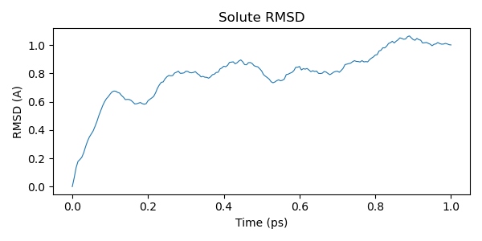
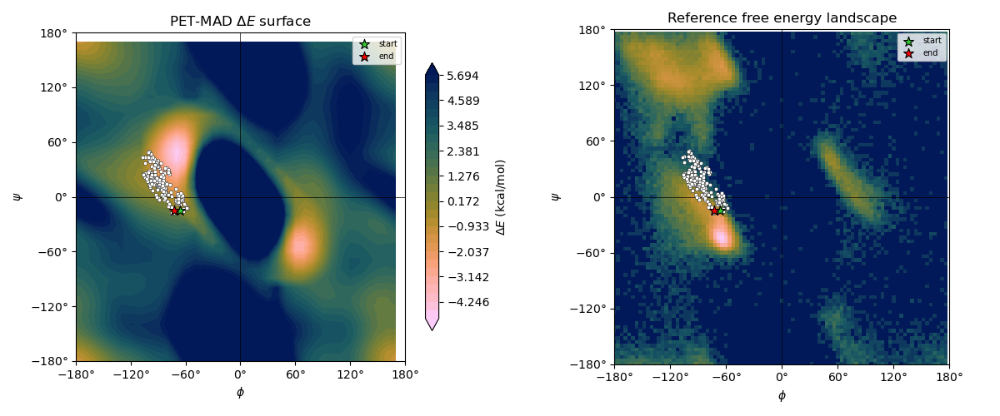

Note
Go to the end to download the full example code.
ML/MM Simulations with GROMACS and Metatomic¶
- Authors:
Philip Loche @PicoCentauri, Rohit Goswami @HaoZeke
In this tutorial we simulate and analyse an alanine dipeptide in water using a machine learning potential for the solute while the solvent is treated with a classical force field. This setup is commonly referred to as an ML/MM simulation and follows very similar ideas to QM/MM.
Hint
How ML/MM works in GROMACS
In QM/MM simulations [1], a small region of the system is treated with quantum mechanics, while the rest uses a classical force field. ML/MM follows the same principle, replacing the QM Hamiltonian with a machine learning potential.
The GROMACS Metatomic plugin implements mechanical embedding: the classical bonded interactions (bonds, angles, dihedrals) and non-bonded interactions (Lennard-Jones, Coulomb) within the ML region are removed from the force field and replaced by the ML model’s energy and forces. Interactions between ML and MM atoms (the coupling terms) are handled by the classical force field. This is closely related to the ONIOM subtractive scheme [2]:
where the MM contribution of the solute is subtracted to avoid double-counting. Currently, boundary interactions (angles and dihedrals spanning the ML/MM interface) are kept in the MM evaluation, which introduces a small inconsistency at the boundary.
We use the Metatomic plugin to couple a pretrained ML model to GROMACS. The ML region consists of an alanine dipeptide (the “protein” group), and the water is kept as standard classical MM.
We will use the PET-MAD XS model (v1.5.0), a small but capable universal potential from the UPET family.
Warning
Limitations of the current implementation
PET-MAD is trained on a broad materials dataset (r2SCAN functional) and is not optimized for biomolecular systems. It is used here to demonstrate the workflow. For production work, use a model fine-tuned on relevant biochemical data.
The current GROMACS metatomic interface does not yet implement full ONIOM subtractive correction at the ML/MM boundary. Boundary bonded interactions (angles and dihedrals that span the interface) are double-counted, which can cause energy drift. A proper ONIOM implementation is in progress.
Energy conservation holds in conservative mode (the default), where forces are obtained via automatic differentiation of the ML energy. The non-conservative mode (direct force output) does not guarantee energy conservation.
Setup¶
We begin by loading the required Python packages.
import subprocess
from pathlib import Path
import ase.io
import chemiscope
import cmcrameri.cm as cmc
import matplotlib.pyplot as plt
import MDAnalysis as mda
import numpy as np
from MDAnalysis.analysis.dihedrals import Ramachandran
from MDAnalysis.analysis.rms import RMSD
from metatomic.torch.ase_calculator import MetatomicCalculator
from MDAnalysis.analysis.dihedrals import Rama_ref
Initial structure¶
We load the initial alanine dipeptide + water structure. We read it with both ASE (for chemiscope visualization) and MDAnalysis (for trajectory analysis later). We select the non-water atoms (the protein) so we can confirm the selections are correct.
all_atoms = ase.io.read("data/conf.gro")
u_initial = mda.Universe("data/conf.gro")
ala_initial = u_initial.select_atoms("not resname SOL")
# Extract just the solute for visualization (22 atoms, not the 6787-atom water ball)
solute_indices = ala_initial.indices
solute_atoms = all_atoms[solute_indices]
print(f"System: {len(all_atoms)} atoms total, {len(solute_atoms)} solute atoms")
chemiscope.show([solute_atoms], mode="structure")

System: 6787 atoms total, 22 solute atoms
Model export¶
Before running the simulation, we need to export the ML model into the TorchScript
format that GROMACS can load. We download the PET-MAD XS checkpoint from HuggingFace
and export it using metatrain.
repo_id = "lab-cosmo/upet"
tag = "v1.5.0"
url_path = f"models/pet-mad-xs-{tag}.ckpt"
fname = Path(f"models/pet-mad-xs-{tag}.pt")
url = f"https://huggingface.co/{repo_id}/resolve/main/{url_path}"
fname.parent.mkdir(parents=True, exist_ok=True)
subprocess.run(
[
"mtt",
"export",
url,
"-o",
str(fname),
],
check=True,
)
print(f"Successfully exported {fname}.")
Successfully exported models/pet-mad-xs-v1.5.0.pt.
Running the simulation¶
The MD parameter file (grompp.mdp) controls the simulation. The key
section for ML/MM is the Metatomic interface at the bottom:
tau-t = 2.0 2.0 ; time constant, in ps
ref-t = 300 300
; Metatomic interface
metatomic-active = yes
metatomic-input-group = protein ; the group on which ML forces are applied
This tells GROMACS to load the exported PET-MAD model and apply ML forces to the
protein group. All other atoms (water) use the classical force field as usual.
We run the GROMACS preprocessor (grompp) to combine the topology, coordinates, and
MDP settings into a single binary input (.tpr), then execute the simulation with
mdrun.
_ = subprocess.check_call(
[
"gmx_mpi",
"grompp",
"-f",
"grompp.mdp",
"-c",
"data/conf.gro",
"-p",
"data/topol.top",
]
)
_ = subprocess.check_call(["gmx_mpi", "mdrun"])
RMSD analysis¶
After the simulation finishes, we analyze the trajectory. We start by computing the RMSD (root mean square deviation) of the solute relative to the initial structure.
Hint
RMSD measures the average positional deviation of atoms from a reference structure. It is commonly used to monitor structural stability and conformational changes in biomolecular simulations. A low RMSD indicates the structure remains close to the starting conformation; larger RMSD values reflect changes in backbone or side-chain orientation.
u = mda.Universe("data/conf.gro", "traj.trr")
ala = u.select_atoms("not resname SOL")
rmsd = RMSD(atomgroup=ala, reference=ala_initial)
_ = rmsd.run()
time_ps = u.trajectory.dt * np.arange(u.trajectory.n_frames)
plt.figure(figsize=(6, 3))
plt.plot(time_ps, rmsd.results["rmsd"][:, 2], linewidth=0.8)
plt.xlabel("Time (ps)")
plt.ylabel("RMSD (A)")
plt.title("Solute RMSD")
plt.tight_layout()

Ramachandran analysis¶
The Ramachandran plot shows the backbone dihedral angles phi and psi, which characterize the conformational state of the peptide backbone. These two angles determine the local geometry of each residue and are a classic analysis target for peptide and protein simulations.
We compute the PET-MAD potential energy surface (PES) over a grid of phi/psi angles by rotating the backbone dihedrals of the isolated solute and evaluating the model at each grid point. We then compare this against the empirical free energy landscape derived from the reference Ramachandran data (statistical distribution of phi/psi in high-resolution protein crystal structures).
protein = u.select_atoms("protein")
rama = Ramachandran(protein).run()
phi_traj = rama.results.angles[:, :, 0].flatten()
psi_traj = rama.results.angles[:, :, 1].flatten()
/home/runner/work/atomistic-cookbook/atomistic-cookbook/.nox/ml-mm/lib/python3.12/site-packages/MDAnalysis/analysis/dihedrals.py:444: UserWarning: Cannot determine phi and psi angles for the first or last residues
warnings.warn(
PET-MAD energy surface¶
We scan a regular grid of phi/psi values by setting the backbone dihedrals on the isolated alanine dipeptide and computing single-point energies with PET-MAD. With only 22 atoms, PET-MAD XS evaluates quickly even on CPU.
calc = MetatomicCalculator(str(fname), device="cpu")
# Alanine dipeptide backbone dihedral atom indices (0-based, for the 22-atom solute)
# phi: C(prev)-N-CA-C psi: N-CA-C-N(next)
# These are standard for ACE-ALA-NME (capped alanine dipeptide)
phi_atoms = [4, 6, 8, 14] # ACE:C - ALA:N - ALA:CA - ALA:C
psi_atoms = [6, 8, 14, 16] # ALA:N - ALA:CA - ALA:C - NME:N
# Atoms to rotate: everything downstream of the central bond
# phi rotates around N-CA bond: move CA and everything after it
phi_move = list(range(8, 22)) # CA onwards (ALA side chain + ALA:C + NME)
# psi rotates around CA-C bond: move C and everything after it
psi_move = list(range(14, 22)) # ALA:C onwards (NME group)
n_grid = 36
phi_grid = np.linspace(-180, 180, n_grid, endpoint=False)
psi_grid = np.linspace(-180, 180, n_grid, endpoint=False)
energy_grid = np.full((n_grid, n_grid), np.nan)
base_solute = solute_atoms.copy()
print(f"Scanning {n_grid}x{n_grid} = {n_grid**2} phi/psi grid points...")
for i, phi_val in enumerate(phi_grid):
for j, psi_val in enumerate(psi_grid):
mol = base_solute.copy()
mol.set_dihedral(*phi_atoms, phi_val, indices=phi_move)
mol.set_dihedral(*psi_atoms, psi_val, indices=psi_move)
mol.calc = calc
try:
energy_grid[i, j] = mol.get_potential_energy()
except Exception:
pass
# Compute reference energy: PET-MAD energy of the initial solute structure
ref_mol = solute_atoms.copy()
ref_mol.calc = calc
e_ref = ref_mol.get_potential_energy()
# Convert to relative energies (vs initial structure) in kcal/mol
energy_grid -= e_ref
energy_grid *= 23.0605 # eV to kcal/mol
# Plots reference Ramachandran data for comparison
rama_ref = np.load(Rama_ref)
ref_phi = np.arange(-180, 180, 4)
ref_psi = np.arange(-180, 180, 4)
Scanning 36x36 = 1296 phi/psi grid points...
/home/runner/work/atomistic-cookbook/atomistic-cookbook/.nox/ml-mm/lib/python3.12/site-packages/metatomic/torch/ase_calculator.py:1482: UserWarning: `compute_requested_neighbors_from_options` is deprecated and will be removed in a future version. Please use `neighbor_lists_for_model` to get the calculators and call them directly.
vesin.metatomic.compute_requested_neighbors_from_options(
We plot the PET-MAD potential energy surface (left) alongside the empirical free energy landscape from the reference Ramachandran data (right). The reference data encodes the statistical frequency of phi/psi angles observed in high-resolution protein structures, which is proportional to a Boltzmann-weighted free energy.
On both panels, the ML/MM trajectory is shown as white dots with the start (green star) and end (red star) marked explicitly. Bright/warm regions correspond to favorable conformations (low energy or high population), while dark regions are unfavorable.
degree_fmt = plt.matplotlib.ticker.StrMethodFormatter(r"{x:g}$\degree$")
fig, axes = plt.subplots(1, 2, figsize=(12, 5))
PHI, PSI = np.meshgrid(phi_grid, psi_grid, indexing="ij")
def style_rama_ax(ax):
"""Apply consistent styling to a Ramachandran axis."""
ax.set_xlabel(r"$\phi$")
ax.set_ylabel(r"$\psi$")
ax.set_xlim(-180, 180)
ax.set_ylim(-180, 180)
ax.set_xticks(range(-180, 181, 60))
ax.set_yticks(range(-180, 181, 60))
ax.xaxis.set_major_formatter(degree_fmt)
ax.yaxis.set_major_formatter(degree_fmt)
ax.axhline(0, color="k", lw=0.5)
ax.axvline(0, color="k", lw=0.5)
ax.set_aspect("equal")
def add_trajectory(ax):
"""Add trajectory points with start/end markers to a Ramachandran axis."""
ax.scatter(
phi_traj,
psi_traj,
s=10,
c="white",
edgecolors="black",
linewidths=0.3,
zorder=5,
)
ax.scatter(
phi_traj[0],
psi_traj[0],
s=80,
c="limegreen",
edgecolors="black",
linewidths=0.8,
marker="*",
zorder=6,
label="start",
)
ax.scatter(
phi_traj[-1],
psi_traj[-1],
s=80,
c="red",
edgecolors="black",
linewidths=0.8,
marker="*",
zorder=6,
label="end",
)
ax.legend(loc="upper right", fontsize=7, framealpha=0.8)
# Left: PET-MAD potential energy surface relative to initial structure
emin = np.nanmin(energy_grid)
emax = np.nanpercentile(energy_grid, 75)
levels = np.linspace(emin, emax, 30)
cf = axes[0].contourf(
PHI, PSI, energy_grid, levels=levels, cmap=cmc.batlow_r, extend="both"
)
add_trajectory(axes[0])
style_rama_ax(axes[0])
axes[0].set_title(r"PET-MAD $\Delta E$ surface")
fig.colorbar(cf, ax=axes[0], label=r"$\Delta E$ (kcal/mol)", shrink=0.8)
# Right: empirical free energy from reference Ramachandran data
# Convert population density to a free energy: F = -kT ln(p/p_max)
# High density = low free energy = bright in batlow
X_ref, Y_ref = np.meshgrid(ref_phi, ref_psi)
ref_norm = np.log1p(rama_ref)
axes[1].pcolormesh(X_ref, Y_ref, ref_norm, cmap=cmc.batlow, shading="auto")
add_trajectory(axes[1])
style_rama_ax(axes[1])
axes[1].set_title("Reference free energy landscape")
fig.tight_layout()

Trajectory visualization¶
Finally, we extract the solute trajectory and visualize it interactively with
chemiscope. We use trjconv to write only the protein group (group 1) to
PDB, then annotate each frame with its time and RMSD value. The RMSD is
shown as a per-frame property in the chemiscope map panel, letting us browse
conformations by their deviation from the starting structure.
# Extract protein trajectory
subprocess.run(
["gmx_mpi", "trjconv", "-f", "traj.trr", "-s", "topol.tpr", "-o", "traj.pdb"],
input=b"1\n", # select Protein group
check=True,
)
trajectory = ase.io.read("traj.pdb", index=":")
# Fix PBC wrapping: unwrap each frame so the molecule stays intact.
# Walk along the chain sequentially, placing each atom within half a
# box length of the previous atom. This handles chain molecules that
# can wrap across multiple box boundaries.
for frame in trajectory:
cell = frame.cell.lengths()
if cell.any():
pos = frame.positions
for i in range(1, len(pos)):
diff = pos[i] - pos[i - 1]
pos[i] -= np.round(diff / cell) * cell
frame.positions = pos
# Fix element symbols: GROMACS PDB atom names may not map cleanly to elements.
# We copy the correct symbols from the initial solute structure.
# Also compute per-frame PET-MAD energy for sanity checking.
frame_energies = []
for frame in trajectory:
frame.symbols = solute_atoms.symbols
frame.calc = calc
frame_energies.append(
(frame.get_potential_energy() - e_ref) * 23.0605 # kcal/mol vs initial
)
properties = {
"time": time_ps,
"rmsd": rmsd.results["rmsd"][:, 2],
"energy": np.array(frame_energies),
}
chemiscope.show(
structures=trajectory,
properties=properties,
settings=chemiscope.quick_settings(
x="time", y="energy", map_color="rmsd", trajectory=True
),
)
/home/runner/work/atomistic-cookbook/atomistic-cookbook/.nox/ml-mm/lib/python3.12/site-packages/metatomic/torch/ase_calculator.py:1482: UserWarning: `compute_requested_neighbors_from_options` is deprecated and will be removed in a future version. Please use `neighbor_lists_for_model` to get the calculators and call them directly.
vesin.metatomic.compute_requested_neighbors_from_options(
Total running time of the script: (2 minutes 5.361 seconds)